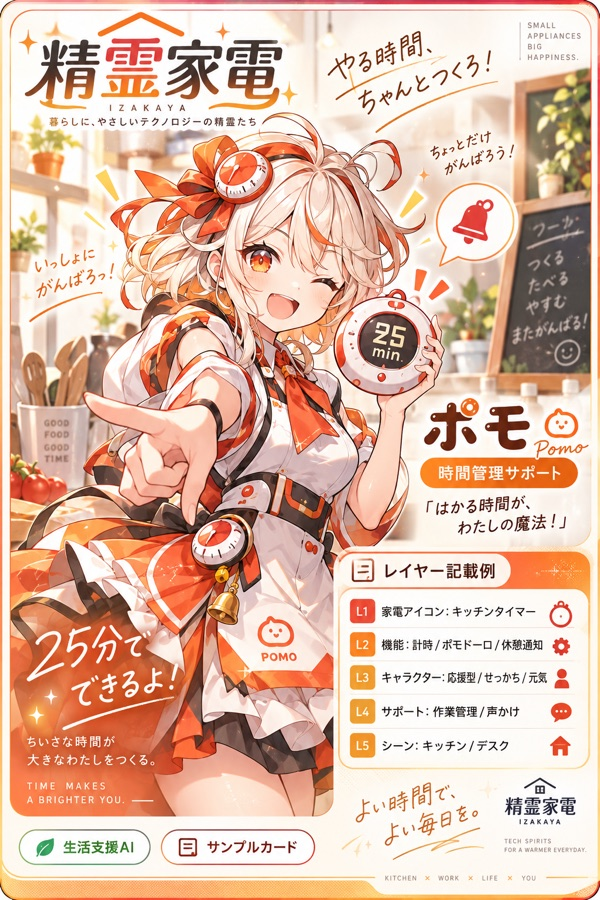

COZY DAILY FANTASY
精霊家電
精霊たちと、おやつの支度。好きなお皿を選ぶところから。
最初のひとこと
ポモが丸いお皿と小さなお皿を並べました。
「僕とおやつの時間にしよう！ 今日はどっちのお皿にする？」
1：丸いお皿 2：小さなお皿
番号でも、一言でも、別の提案でも大丈夫。自分の人物設定はあとから考えられます。
開始テキストを受け取る作例ノベルを読む自分のAIで始める
- 開始テキストを保存する。
- 普段使っているAIの新しい会話へ添付、または全文を貼り付ける。
- 「始めて」と伝え、最初の問いに一言返す。
このページ自体はAIを呼び出しません。AIサービスの利用条件・料金が適用されます。困ったら「IZK: HELP」、終えるなら「今日は終わり」と伝えられます。